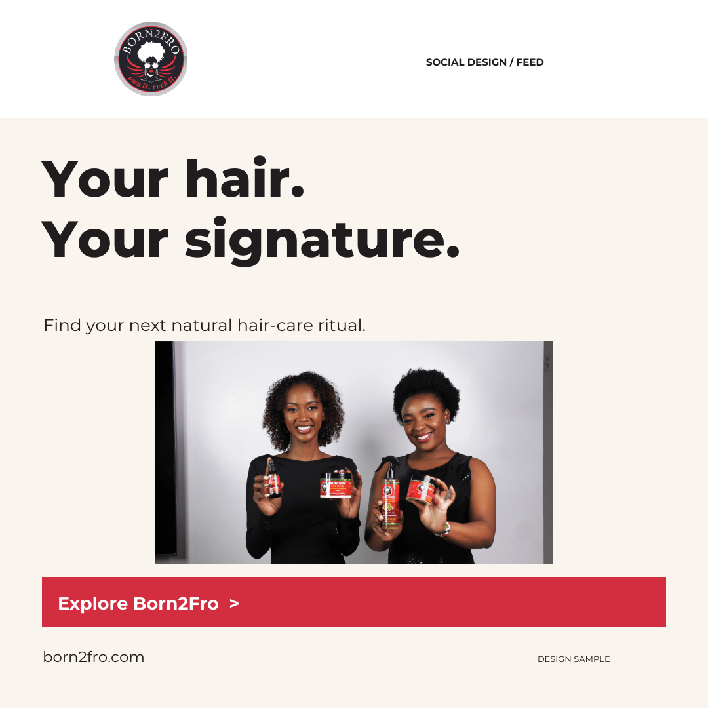
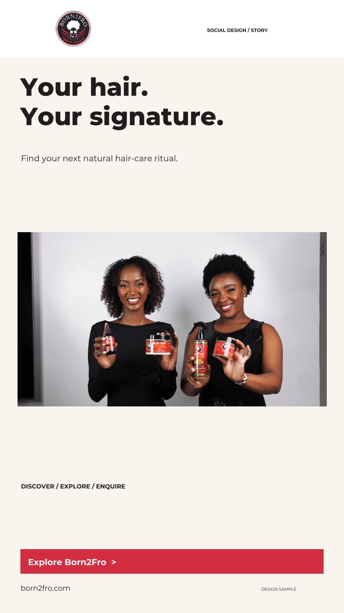
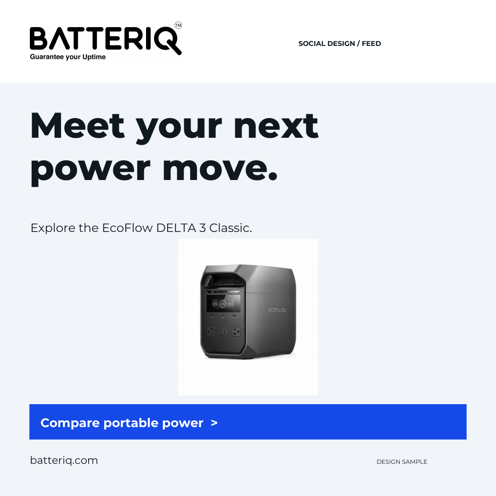
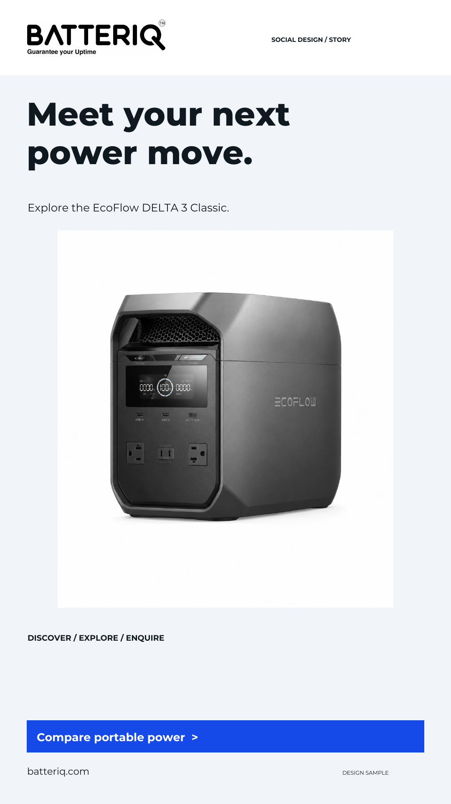
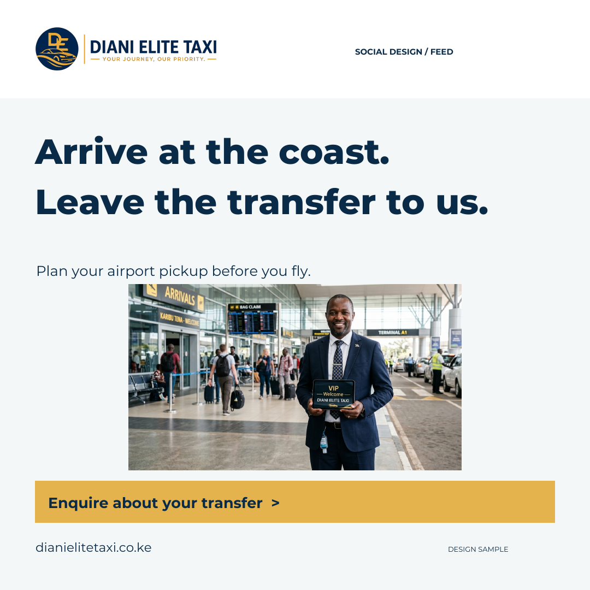
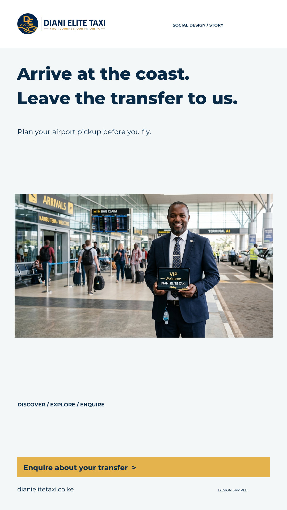
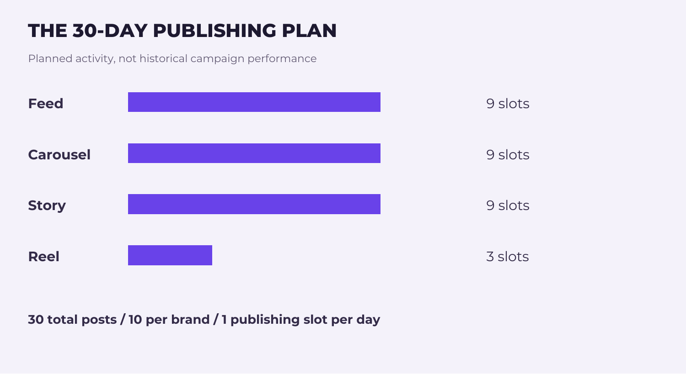
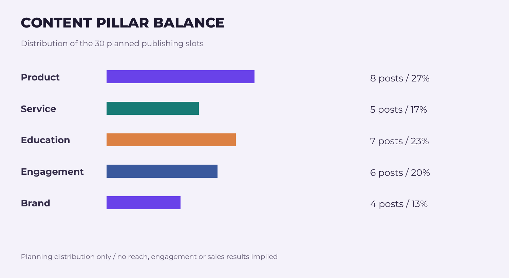

Brand identity, translated into social.
A selection of design samples exploring layout, art direction and content writing across hair care, portable power and coastal travel.
01 / Brand affinity
Born2Fro




02 / Product discovery
BATTERIQ




03 / Transfer enquiries
DIANI ELITE TAXI




EDUCATIONAL CONTENT
Designed to be saved.
Three-slide carousels that turn a useful checklist into a repeatable brand format.
Born2Fro


Batteriq


Diani Elite Taxi


STRATEGY / PROPOSED PUBLISHING PLAN
30 days. Every post has a purpose.
Ten posts per brand, organised into one daily slot across the portfolio. These are planned publishing slots, not historical activity. Reels require approved footage.


| Day / Brand | Format / Topic | Caption | CTA / Measurement |
|---|---|---|---|
| Day 01 Born2Fro | Feed Your hair. Your signature. | Your texture, your style, your routine. Explore the Born2Fro collection and find your next hair-care ritual. | Explore collection Profile visits |
| Day 02 Batteriq | Feed Meet your next power move | Explore the EcoFlow DELTA 3 Classic at Batteriq. Review the current specifications and compare it with your device requirements. | View product Product-page clicks |
| Day 03 Diani Elite Taxi | Feed Arrive at the coast | Your arrival deserves a plan. Share your flight details and destination with Diani Elite Taxi to enquire about an airport transfer. | Enquire online Booking enquiries |
| Day 04 Born2Fro | Carousel Build your care checklist | Start with your current routine, styling habits and product instructions. Save this checklist before your next hair-care shop. | Save checklist Saves |
| Day 05 Batteriq | Carousel Plan before you power | List the devices you need, check their requirements and compare the available outputs. Save this checklist before choosing a portable power station. | Save checklist Saves |
| Day 06 Diani Elite Taxi | Carousel Your airport pickup checklist | Flight date, arrival time, destination, passenger count and luggage. Save this checklist before sending your transfer enquiry. | Save checklist Saves |
| Day 07 Born2Fro | Story What is your wash-day essential? | What is the one step you never skip on wash day? Use the question sticker and tell us about your routine. | Reply to question Story replies |
| Day 08 Batteriq | Story What would you power first? | A work setup, essential devices or your next trip? Tell us what you would use portable power for. | Reply to question Story replies |
| Day 09 Diani Elite Taxi | Story Where are you heading? | Airport arrival or a coastal day out? Tell us what you are planning and start your transfer enquiry. | Reply with destination Story replies |
| Day 10 Born2Fro | Reel A closer look at the collection | A closer look at the Born2Fro range. Show the packaging, textures and routine placement; use only approved product instructions. | Browse products Product-page clicks |
| Day 11 Batteriq | Reel Product detail walkthrough | Take a closer look at the DELTA 3 Classic. Film the actual product and walk viewers through the manufacturer-listed specifications. | Read specifications Product-page clicks |
| Day 12 Diani Elite Taxi | Reel From arrivals to the next stop | Show a real arrival journey with approved footage: meeting point, vehicle and destination. Invite travellers to send their trip details. | Send trip details Booking enquiries |
| Day 13 Born2Fro | Feed Own it. Rock it. | Your hair is part of your expression. Wear your texture your way and make your care routine your own. | Explore brand Profile visits |
| Day 14 Batteriq | Feed Start with your devices | A useful power plan starts with your devices. Check the wattage and compatibility information before comparing a power station. | Compare products Website clicks |
| Day 15 Diani Elite Taxi | Feed Bring the whole plan | Travelling as a group? Include passenger numbers and luggage details so the team can advise on a suitable vehicle. | Enquire about vehicle Qualified enquiries |
| Day 16 Born2Fro | Carousel Read the label, build the ritual | Before adding a new product, check its instructions and consider how it fits your current routine. Save this reminder for your next shop. | Save post Saves |
| Day 17 Batteriq | Carousel Three checks before you choose | Device requirements. Output connections. Charging options. Compare these details on the product page before deciding. | Save checklist Saves |
| Day 18 Diani Elite Taxi | Carousel Before your travel day | Confirm your travel details, keep your booking contact handy and agree on the meeting point with the team. Save this travel-day reminder. | Save reminder Saves |
| Day 19 Born2Fro | Story Choose your next topic | Would you rather see a routine walkthrough or a product close-up next? Vote in the story poll. | Vote in poll Poll responses |
| Day 20 Batteriq | Story Your portable-power question | What would you like to know before choosing portable power? Send a question for the next product explainer. | Ask a question Story replies |
| Day 21 Diani Elite Taxi | Story Ask a transfer question | Planning an arrival at the coast? Send your transfer question and include your destination. | Ask a question Story replies |
| Day 22 Born2Fro | Feed Your next hair-care moment | Make a little space for your routine. Explore the collection online and take a closer look at the products that interest you. | Browse collection Website clicks |
| Day 23 Batteriq | Feed Explore the range | Different setups call for different power options. Browse Batteriq and compare the current product information. | Browse range Website clicks |
| Day 24 Diani Elite Taxi | Feed Your journey, your priority | From your arrival plans to your destination details, a clear enquiry makes planning easier. Start with your travel date and route. | Visit website Website clicks |
| Day 25 Born2Fro | Carousel From inspiration to routine | Find your inspiration, review the product information and build a routine that suits your needs. Swipe through the three-step checklist. | Save checklist Saves |
| Day 26 Batteriq | Carousel Choose with clarity | Use product specifications to compare your options. If something is unclear, ask before you choose. Save this comparison checklist. | Send enquiry Qualified enquiries |
| Day 27 Diani Elite Taxi | Carousel A better transfer enquiry | Send the date, route, flight information, passenger count and luggage details together. Swipe through the checklist before you enquire. | Send trip details Qualified enquiries |
| Day 28 Born2Fro | Story Explore the collection | Ready for a closer look? Visit Born2Fro for current product details and the full collection. | Visit website Link taps |
| Day 29 Batteriq | Story Ready to compare? | Visit Batteriq to explore portable power and check current product details. | Visit website Link taps |
| Day 30 Diani Elite Taxi | Story Plan your next transfer | Ready to plan your airport pickup? Visit Diani Elite Taxi and share your journey details. | Visit website Link taps |
Download editable calendar data (JSON) ↓ / Download printable calendar + portfolio PDF ↓
Measurement comes after publication.
Track link taps, saves, replies and qualified enquiries. Add actual reach, engagement and conversion figures after publication. No performance data is implied by the planning graph above.
About this selection
Design samples prepared by Samuel Kidemi with AI-assisted copy development and imagery sourced from the brands’ websites. Brand names identify the subject of each sample; this selection does not claim commissioned social campaigns, account management or measured campaign results.
Scope: visual direction, feed and story artwork, carousel development, caption writing, a 30-day content calendar and measurement planning. Brand imagery usage must be approved before external campaign publication.